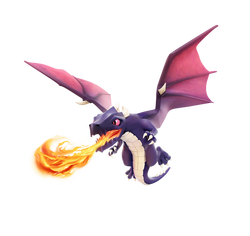
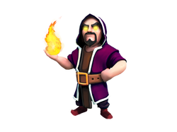
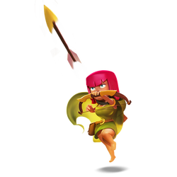
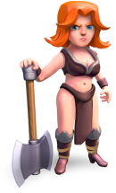
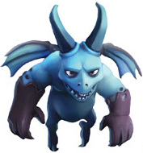
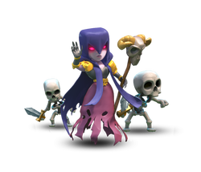
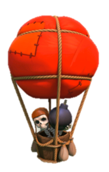
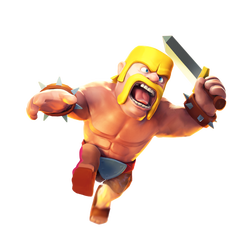

Troop Donations
The donation of troops will be handled by top level players first. To maximize the benefit of high level troops, the bottom 7 bases will be given 1 Valkyrie each and the bottom 3 bases with 20 troop space will each be given a dragon. The rest of the bases are not as affected by the clan castle troops they are given. Use the following as a guide to determine good troops to hand out.

Dragons
Rating: 9/10
If your clan castle is close to the center of your base and you have space for one it is hard to go wrong with a dragon. These fire breathing lizards from hell are great for defense. They have high health and splash damage. A little more troop waste is required to take them out. There only downside is that a raid can work around them due to their slow movement speed.

Wizards
Rating: 8/10
Wizards have the highest DPS(damage per second)/space in the game. Their ranged attack and splash damage make them a valuable troop. The primary weakness is the dragon and being picked off by spread out Archers. Level 6 can survive a lightning while level 5 are unable to. Generally speaking you can sleep easy knowing you have wizards to defend your base.

Archers
Rating: 6/10
Archers are hands-down the best cheap unit to use in the Clan Castle. There are three primary advantages of using Archers: high damage, range, and ability to shoot air units. While the Archer's damage is typically not considered high due to its propensity to get easily killed, it is not so easy to take out Archers on defense.

Valkyries
Rating: 6/10
The one area where Valkyries are particularly effective is in the Clan Castle. The Valkyrie is strong against Archers and Barbarians. Their splash damage and high DPS make them extremely effective in defending low level bases since they can one shot large groups of units.

Minions
Rating: 5/10
A flying Archer that throws dark elixer at its enemies. These little blue guys take up 2 housing spaces each and cannot take a hit. They are great for attacking in mass but in smaller numbers like the Clan Castle for defense they are less effective.

Witches
Rating: 5/10
Witches have low DPS & Health, but what makes these babes so great is they spawn up to 8 skeletons at a time, which is great, taking out pesky ground troops or air. They work as a re-spawnable distraction, while added with another troop, archer/wizard, to mop up and take out the distracted enemy troops.

Balloons
Rating: 4/10
If you consider Balloons a poor man's dragon then you may understand how useful they are. They have good attack power and are slow enough not to be lured out. They are weak against the ranged attack of an archer and are obviously terrible against air units. They do have their merit however. Lower level guys unable to hold a dragon may find these floating wall breakers a useful choice.

Barbarians
Rating: 4/10
Barbs! Fresh info on these cool little critters, as these are slow meat shields, luring these warriors is the slowest process and hardest to lure, so a little more troop wastage will be made in the process of doing so! I would assume, this is great for hog attacks. But only target ground troops!
Select which troops you want wisely based on your base design. Please do not use clan wars as a testing ground for your defensive tactics. If you have questions feel free to ask the clan.